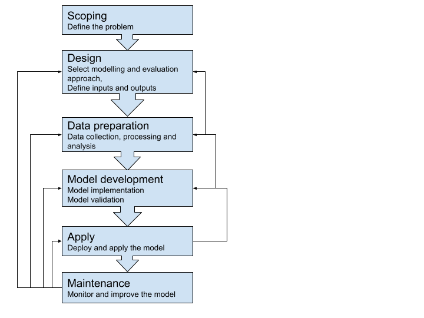

8 Modelling
The word “modelling” is used broadly to describe the process of analysis involved in data science. In this guide, a ‘model’ is a simplified quantitative representation of a real world situation, which often answers a specific question. Modelling can be used to help derive insights or drive decision making.
8.1 Keep in mind
- Apply an equity lens all the way through the model lifecycle: consider who is benefiting from a model, who is vulnerable, and who is excluded. This lens should inform the data chosen, how the data is processed, algorithm choice, how the model is evaluated, and how the model is used
- Closely engage with the stakeholders and data providers (see End-user engagement)
- Maintain clinician engagement throughout
- Have good quality documentation to share the work with others (see Documentation and management)
- Version control the code base so that work is reproducible (see Documentation and management)
- Check data quality and availability including operational concerns, sanity checking and bias (see Data quality)
- Consider your audience when presenting data (see Transparency, interpretability and explanation).
This guidance is applicable to any analytical technique.
8.2 Modelling process
Although details can differ from case to case, there are several general modelling process steps and principles that can help achieve good results.

Scoping should clearly define what problem a model is trying to solve. This affects almost all the later steps outlined above. In general, a more specific scope is more likely to lead to success, which should also be defined at the outset. Documenting the scope usually involves sign-off from oversight groups, and can reduce wasted effort or misunderstanding later in the project.
8.3 Modelling approaches
A general principle of modelling design is to select models that are as simple as possible, but are capable of solving the defined problem. Consider the requirements for ‘explainability’ (the concept that a model and its output can be explained in a way that “makes sense” to a human) for your use case when choosing your model. For example a logistical regression model is easily communicated (see Transparency, Interpretability and Explanation).
Multiple modelling approaches may be suitable for solving one problem, with each approach having advantages and disadvantages. If capacity and feasibility allow, it’s often beneficial to use more than one technique. Similar insights provided via different approaches only add to the credibility of modelling.
Your choice of technique will be influenced by your ability to explain how it works to end users, and operationalise the inputs to the model. Consider this prior to choosing your model/s.
Below is a non-exhaustive list of categories of quantitative models and the example healthcare problems that they are used for:
| Model | Example use case |
|---|---|
| Descriptive statistics | Understand disease prevalence and demographics of patient cohorts |
| Regression model | Relationship between risk factors vs. cost of cancer treatment |
| Classification model | Identify high risk patients |
| Clustering model | Identify different patient cohorts |
| Simulations | Workforce planning during a pandemic using simulated disease spread trend |
| Optimisation | Minimising surgeons’ overtime while planning as effectively as possible to meet surgery demands and optimise throughput |
| System dynamics | GP training plan for the next ten years given the population and workforce dynamics |
| Language models | Model-aided auto coding of clinical documents |
There are numerous additional examples (also see Complex Systems Modelling Group 2010).
8.4 Documentation and management
We highly recommend that you document all the steps of your project. Information about the software used in model development and the modelling environment itself should be comprehensively documented, including the language or software used, dependencies, and version numbers, to enable the model to be able to be reproduced. This is particularly important as packages are updated often, which can cause a change that affects the production, performance, or other aspects of a model.
For machine learning model management, there are open-source tools such as MLflow that can efficiently manage the machine learning lifecycle. This includes experimentation, reproducibility, deployment, and a central model registry. Tools including Docker, pipenv and renv assist portability and reproducibility, and help generate documentation.
When communicating a model to your stakeholders, make sure you explicitly explain the assumptions on which your model has been developed, and the limitations of the model. Documentation should clearly outline the input parameters and ranges, and any implications from sensitivity analyses (see Transparency, Interpretability and explanation).
Transparent Reporting of a multivariable prediction model for Individual Prognosis or Diagnosis (TRIPOD) (Moons et al. 2015) is a well established and practical template used for healthcare model reporting. For simpler reporting, consider Minimum information about clinical artificial intelligence modelling: the MI-CLAIM checklist (Norgeot et al. 2020) as an alternative. The EQUATOR Network, an international initiative promoting high-quality transparent health research, also has useful resources (see reference).
For key information on governance requirements, refer to the governance process and Algorithm Information Request template for the New Zealand Algorithm Hub (Mō te pokapū - about the hub).
Documents and/or artefacts commonly related to producing and deploying a model can include:
- Design overview
- Assumptions document
- Data dictionary
- Example of consent forms
- Evidence of ethical approval or exemption
- Technical documentation
- Slide deck for communication
- Prospective evaluation.
Using a version control system such as git is very important for coordinating activity, avoiding rework, auditing - and generally maintaining your own sanity.
8.5 Modelling tools
Commonly used tools for statistical analysis and modelling that require minimum programming:
Statistical Package for the Social Sciences (SPSS): Suitable for descriptive statistics, parametric and non-parametric analyses, and visualisation of analysis results.
Microsoft Excel: Easy to view initial observation over tabular data, and suitable to generate summary metrics of data and create simple data visualisations. Excel has some notable drawbacks though. including:
- A column and row size limit
- Difficulty in auditing and rerunning with different data
- Entangled data and analytics layers, which can compromise data integrity.
Cloud based modelling platforms such as BigML: These platforms provide a web interface for you to easily run machine learning modelling experiments, as well as interpretability and collaborative features. However, you may need to upload your data to the cloud, which may require additional data policy checking.
Commonly used programming tools for statistical analysis and modelling:
R: A fully open-source software environment for statistical computing and graphics. The RStudio GUI is available, and the R Markdown plug-in can facilitate R code and Markdown-based report/documentation generation, and thus collaboration. The R community is active in developing and maintaining various analysing and modelling packages. Essential packages for data science include:
For data manipulation:
dplyr,tidyr,dbplyr, and other Tidyverse packagesFor modelling:
caret,e1071,mlr3For visualisation:
ggplot2,plotlyFor report generation:
knitrFor creating interactive web interfaces:
shiny
Python: A high-level, object-oriented programming language with good code readability. Python has a comprehensive ecosystem to support common statistical analysis, machine learning, deep learning and the implementation and deployment of these data science features. Jupyter notebook/lab is a widely used tool in the Python ecosystem for shareable data science work. Many dependencies in the Python ecosystem are open-source. Essential Python dependencies for data science include:
For data manipulation:
pandas,numpyFor statistical analysis:
scipy,statsmodelsFor modelling including machine learning:
scikit-learn,statsmodelsFor deep learning:
tensorflow,pytorch,kerasFor visualisation:
matplotlib,seaborn,plotly,bokehFor creating interactive web interfaces:
dash,streamlit
SAS: A statistical software suite for data management, advanced analytics, multivariate analysis, predictive analytics and so on. SAS has its own GUI which is suitable if you’re a non-technical user, but programming via the SAS language can provide more flexibility and functionality in the analysis. It provides free SAS Ondemand for Academics (previous University Edition) for non-commercial users such as students and educators.
Matlab: A proprietary programming language and environment optimised for numeric computing. Matlab is powerful for linear algebra and is used for applications such as simulation and signal processing. For machine learning and deep learning, Matlab provides the Statistics and Machine Learning Toolbox and the Deep Learning Toolbox, respectively.
Open source tools such as R and Python are a great place for you to start as they provide transparency, the ability to collaborate, and have a low barrier to entry in terms of cost. However, they may not work in practice in every use case, and we’re not clear on how stable these tools will remain following version changes over time. Commercial tools tend to have a higher cost than their open source counterparts, but offer more controlled and supported experiences.
Check the license terms for the tools you’re using. Models developed using some commercial tools may not be able to be used in a specific deployment environment.
8.6 Experiment tracking tools
Model development is an iterative process and it takes time to find an optimal set of configurations for the problem you are trying to solve. Monitoring experiment configurations and model performance can be cumbersome, especially when the complexity of a model grows. There are many experiment tracking tools available to help you with machine learning model development, such as this list from Neptune.ai.
8.7 Model validation
8.7.1 Data partitioning
Models are usually tuned to the dataset that they are trained with. Using independent datasets for validating the performance of a model is preferred. However, in the healthcare domain, data sharing can make this difficult.
When independent datasets aren’t available, your model needs to be validated using the development dataset. There are two main approaches for train-test data splitting and model validation.
Bootstrapping (multiple samples with replacement) can also be used for model development, with models evaluated with an “out of bag” sample. Bootstrap sampling is embedded in boosting and bagging algorithms.
- Cross validation
This method mixes and shuffles all data points and splits them into k folds (usually 5-10) for iterative performance measuring. In each iteration, one fold is left out as the testing set and the others are used as the training set. By these iterations, k measures of the chosen performance metric(s) can be obtained to assess the model’s average performance and variance, which is used as an estimate of the model’s performance on unseen data.

When using cross validation, it’s important you ensure there are no significant data changes across time within the model development dataset. For example, if a policy change was implemented at a date in the middle of your dataset time range - this may impact the data and affect model performance at some time post that date. You will also want to ensure that there are no foreseeable data changes between the development set and the future data that the model would be applied on. In healthcare, it’s also important to check whether the model will be used at an event level (e.g. a hospitalisation event or GP visit) or patient level in advance.
:::{.callout-tip} There could be multiple events for the same patient in a dataset. If no proper consideration is taken into account while splitting the testing data (or other preprocessing like deduplication), this could potentially lead to information leakage and inaccuracy. :::
For example, in a longitudinal dataset of health encounters, the dataset could be split to group all of a patient’s encounters together (so these are not split across sets), or split by time (which could mean a patient’s encounters are split between different validation sets). You should consider whether these types of splitting will make a meaningful difference to your validation exercises. Also be mindful of anything that involves a flow or transfer.
- Time-wise validation
Many healthcare model applications have a time dimension, as data is collected by healthcare events that happen across time. There may be a trend in the data as people age, population structure changes, and healthcare technologies and systems evolve.
To better estimate the future performance of a model, a time-wise splitting and validating approach should be taken. This method sets data of a specified period along time as the testing set and uses the data before the testing set as training data. A visualisation of performance change over time will be obtained after a number of iterations, which provides an estimation of the trend of the model’s performance change in the near future - whether it will it be relatively stable, gradually decreasing or increasing.
Some models have a complex hyperparameter space and require an additional split of data for early stop-in training or additional hyperparameter optimisation. In classification models that rely on a cut-off threshold in application (for example, a high-risk patient identification model based on numeric risk scores), the cut-off threshold can also be seen as part of the model hyperparameters, and its determination should be considered as part of the model development. As a result, the performance validation process should be using a partition of data that is not used in either model training, additional hyperparameter optimisation, or the threshold optimisation in particular.
In all cases, you should take care to ensure that the sampling unit is complete. For instance, you may be modelling a flow of events, in which case the sampling unit is likely to be a patient. If the modelled data consists of multiple records per patient, it’s important to ensure that complete patient records are sampled.
8.7.2 Performance metrics
To assess model performance, the type of performance metric you use (as outlined below) will depend on the model being evaluated and the context of the project. For models that predict a value, such as a linear regression model, R-squared and root mean square error (RMSE) are common.
In health, metrics calculated from a confusion matrix for models that output a class (e.g. a decision tree) or probability (e.g. logistic regression) are commonly used. To produce a confusion matrix for a model that outputs a probability, a probability threshold is applied (where values above the threshold are positive and values below are negative). The probability threshold can be set to optimise a particular metric, can be set by other optimisation techniques, or otherwise set according to the use case. Seek clinical input on the appropriate thresholds as they can impact patient care.
There are a number of common performance metrics that can be used (although it’s important to note that not all are appropriate for each model or data type or question being answered):
Precision - quantifies the proportion of positive class predictions that actually belong to the positive class
Recall - quantifies the number of positive class predictions made out of all positive examples in the dataset
Model accuracy - a machine learning classification model performance metric that’s defined as the ratio of true positives and true negatives to all positive and negative observations
F-Measure - provides a single score that balances both the concerns of precision and recall in one number
Positive and negative predictive values (PPV and NPV respectively) are the proportions of positive and negative results in statistics and diagnostic tests that are true positive and true negative results, respectively. The PPV and NPV describe the performance of a diagnostic test or other statistical measure. PPV and NPV are best described as the clinical relevance of a test.
Prevalence - the number of cases in a defined population at a single point in time and is expressed as a decimal or a percentage
Sensitivity - the percentage of true positives (for example, 90% sensitivity = 90% of people who have the target disease will test positive)
Specificity - the percentage of true negatives (for example, 90% specificity = 90% of people who do not have the target disease will test negative)
AUC-ROC - a performance metric for “discrimination”; it tells you about the model’s ability to discriminate between cases (positive examples) and non-cases (negative examples). For a ranking use case AUC-ROC is a measure that indicates how good the model is at ranking cases based on a score (how likely any two cases are correctly ordered). 0.5 indicates that the model is no better than random at ranking and 1 indicates a perfect model.
AUC-PRC - a measure that indicates how good the model is at minimising the trade-off between precision and recall. A high AUC-PRC shows that the model can achieve high recall and high precision at the same time.
8.8 Useful resources
Rules of Machine Learning: Best Practices for ML Engineering (Google Machine Learning Guides)
Ten rules for the credible practice of modelling nd simulation in healthcare (Erdemir et al. 2020)
Book on modelling in healthcare (Complex Systems Modelling Group 2010)
A Practical Guide to Maintaining Machine Learning in Production
Model cards for model reporting (Mitchell et al. 2019)